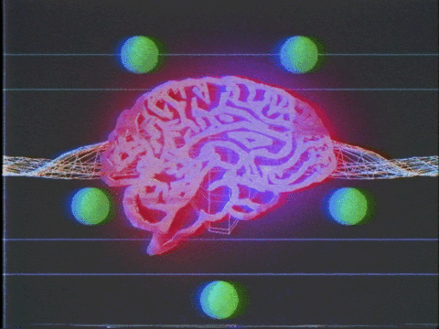

<!DOCTYPE html>
<html lang="en">
  <head>
    <title>sierra glicker</title>
    <link rel="shortcut icon" href="" />
    <meta charset="utf-8">
    <meta name="description" content="" />
    <meta property="og:image" content=""/>
    <meta name="viewport" content="width=device-width, initial-scale=1" />
    <script src="https://ajax.googleapis.com/ajax/libs/jquery/3.3.1/jquery.min.js"></script>
    <link href="assets/css/styles.css" media="all" rel="stylesheet" />
    
  
  </body>
  </html>

  <body ALIGN=center></body>
   <h1>Wikipedia Styles</h1>

  <br>
   
  

  <br>
 
  


  <ul></ul>

  <a href="file:///Users/owner/glics998.github.io/projects/wikipedia%20styles/style%201/index.html" target="_blank">1</a>


  <a href="file:///Users/owner/glics998.github.io/projects/wikipedia%20styles/style%202/index.html" target="_blank">2</a>


  <a href="file:///Users/owner/glics998.github.io/projects/wikipedia%20styles/style%203/index.html" target="_blank">3</a>


  <ul></ul>
    
    
      
 
   


     

      
     
  
  
   </body>
   </html>


  

  


